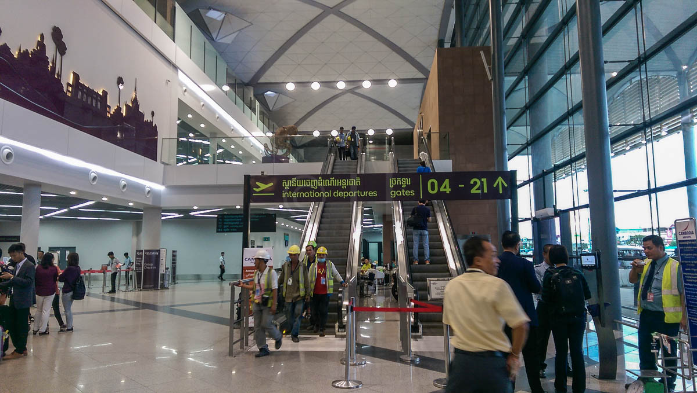
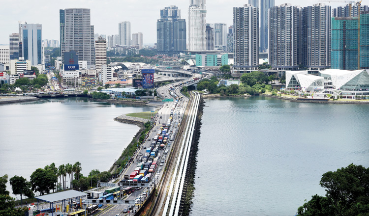
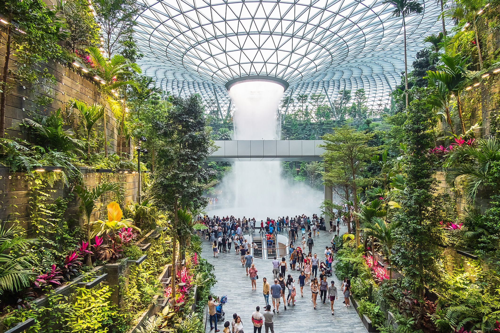

This is the start of the stress.
I woke up at 7:30am to prepare all my stuff. I then got ready and went to airport (aproximately 9am). I arrived at around 10am, took some pictues at went in to find some food.
At 11:10am, airport staff announced that check-in is open for my flight. The check-in proccess took around 30mins. After that I got myself a cup of coffee, while I wait for my 1:30pm flight.
After a long while I finally arrived at the Kuala Lumpur Airport (4:30pm local time). I got my bags and wait until 7pm for the taxi to arrive, then I had to take another 2h to get the hotel and arrived at 9pm. It was an exhausting day so I went to sleep. The hotel's name is "Thistle Port Dickson Resort" btw.

I did NOT get a good night sleep, I was too worried about today's exam. I woke up at 7am, went to get breakfast and made my way to exam hall at 7:50am. At 8am the exam started, it was surprisingly easy. They annouced the results at 7pm.
I won the 3rd place prize!!

I didn't do much after, so I'm not gonna get into details.
Today was even more stressfull. I woke up at 6am to go get breakfast, then waited for my taxi until 8:30am to go the Malaysia/Singapore border. It was a 4h car ride, and it was not fun what so ever.
Even after all this, I had to switch between 3 trains from the border to the hotel which took another 2h. After I got to the hotel, I checked-in at about 5:30pm. At 6pm I went to find something to eat in Chinatown. I didn't find anything good so I just had McDonalds.

This was the first good-night sleep I've had since I left Cambodia. There's a place called "Marina Bay", which has a really cool merlion statue, so I hung out there for the whole morning.

After visiting marina bay, I went to get lunch at a quite well-known restaurant here in Singapore. It's called "Toast-Box", It's just simple toast with medium cooked eggs but it tastes way better than it sounds.
After lunch, I went back to hotel to get ready for my flight back to Cambodia. I checked-out of the hotel at 12pm, and called a taxi to the Changi Airport.
I checked-in at 1:15pm, boarded the flight at 3pm, and took-off at roughly 3:30pm.

My flight touched down in Phnom Penh International Airport at 4:30pm (local time). But I didn't get all my bags until 5pm.